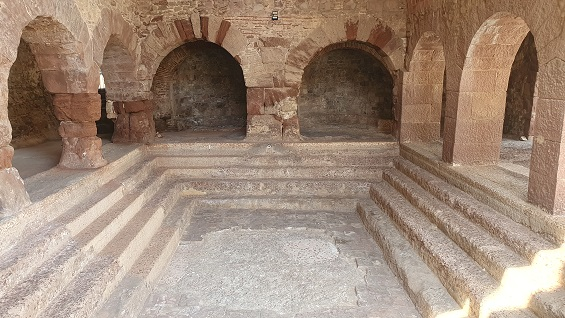

|
Poblada desde el Neolítico. De época ibera
destaca el yacimiento de Torre Roja.
Son unas de las termas romanas mejor conservadas de Hispana. Plinio
y Virgilio ya nos hablaron de ellas. Las termas romanas de Caldas de
Montbui datan del siglo II-I a.e.c. Termas medicinales.
Agua sale a 74°c. Se conservan los restos de una piscina de 13'5 x
6'9 m y la galería que la rodea.
 |